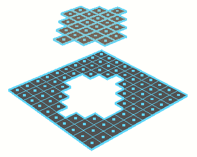

可以选择面，然后使用“编辑网格 > 提取”(Edit Mesh > Extract)将其与多边形网格断开。提取操作通过基于当前选择复制相应的边和顶点来移除多边形。
您可以将提取的面置于同一网格对象内的新壳中，或者使用提取的面创建新的多边形网格。

从网格提取面
- 选择要提取的面，然后选择“编辑网格 > 提取”(Edit Mesh > Extract) >
 。
。
- 设置以下“提取选项”(Extract Output)：
- 如果希望提取的面变成它们自己的网格，请启用“分离提取的面”(Separate extracted faces)。提取的面将分离到它们自己的单独对象中。不会影响网格中的任何已存在的壳。
- 禁用“分离提取的面”(Separate extracted faces)，以使复制的面成为现有网格的一部分。
- 单击“提取”(Extract)。
该操作将创建一个 polyChipOff 节点，并切换到“显示操纵器工具”(Show Manipulator tool)。
- 请执行下列任一操作：
- 使用操纵器控制要移动提取的面的方向和距离。请记住，按 Insert 或 Home 键也可以更改枢轴。单击附加到操纵器的圆形控制柄以在局部轴和世界轴之间进行切换。
注： 只有当“构建历史”(Construction History)处于启用状态时，才会出现“显示操纵器工具”(Show Manipulator Tool)。
- 在显示的视图中编辑器中，编辑 polyChipOff 属性。
“保持面的连接性”(Keep Faces Together)选项用于控制“提取”(Extract)处理相邻面的边的方式。启用“保持面的连接性”(Keep Faces Together)时，面将扩展，以使其边保持连接。禁用“保持面的连接性”(Keep Faces Together)且启用“分离提取的面”(Separate extracted faces)时，每个面都成为单独的网格。
- 使用操纵器控制要移动提取的面的方向和距离。请记住，按 Insert 或 Home 键也可以更改枢轴。单击附加到操纵器的圆形控制柄以在局部轴和世界轴之间进行切换。